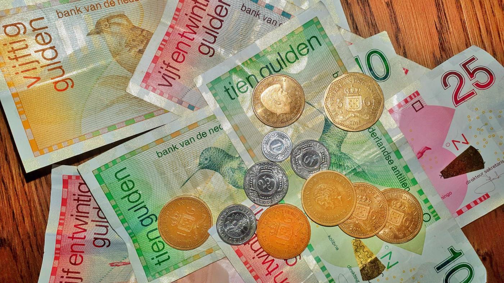

Informatie over Curacao
algemeen
Curacao heeft ongeveer 160.000 inwoners. Curacao kent zeer diverse bevolkingsgroepen. De meerderheid is Creool. Dit zijn mensen van gemengde Afrikaanse en Europese afkomst die als inheems worden beschouwd.
Daarnaast zijn er ook minderheden van Europese Nederlanders, Chinezen, Libanezen, Portugezen, Surinamers, Venezolanen, Brits-West-Indiers, Dominicanen, Haitianen en Colombianen. Er woonden 102 verschillende nationaliteiten op het eiland in 2006.
In totaal wonen er ongeveer 150.000 Antillianen (met name Curacaoenaars) in Nederland, dat is bijna hetzelfde aantal als op Curacao woont. Het merendeel van de jongeren tussen de 16 en 40 jaar die in de jaren negentig naar Nederland trokken op zoek naar een beter bestaan was afkomstig van Curacao.
In de regenboog van culturen vinden we een kleurige mix van etnische groepen in het erfgoed van Curacao haar verleden. Gezamenlijk vormen zij een multi-culturele samenleving op zijn best.
vlag
De vlag van Curacao is blauw met een gele streep en twee witte sterren bovenaan de hijskant. De grote ster staat voor Curacao, de kleine voor Klein Curacao.
Het blauw staat voor de lucht en de zee, van elkaar gescheiden door een gele zonnestraal.
De vlag werd aangenomen op 2 juli 1984. Sindsdien wordt op 2 juli de "Dia di bandera" gevierd.
Geschiedenis van Curacao
Het eiland Curacao is onder zee ontstaan en werd op 26 juli 1499 ontdekt door de Spaanse ontdekkingsreiziger Alonso de Ojeda. De Arawak indianen waren de eerste bowoners van het eiland. De indianen waren groter dan de Spanjaarden, daarom noemden de indianen het eiland 'islas de los gigantas' (eiland van de reuzen). De grond van het eiland was arm en droog, daardoor verklarden de Spanjaarden het eiland in 1513 tot 'islas inutil' (nutteloos eiland).
In de 17de eeuw vervoerden de Nederlandes handelslieden van de West Inische Compagnie (WIC), slaven vanuit Afrika naar Curacao. Curacao groeide in 1660 uit tot doorvoerhaven van slaven naar andere landen in Zuid-Amerika en in het Caribische gebied. In 1995 kwamen de slaven op Curacao in opstand, en in 1863 werd de slavernij afgeschaft.
In 1634 werd het eiland door de Hollanders veroverd. Na periode van Engelse bezetting, kwam het in 1815 opnieuw in Nederlands bezit. Sinds 1954 hebben de Antillen een zelfstandige positie binnen het koninrijk.
Isla is een raffinaderij op het schiereiland Isla op Curacao. Het heeft een capaciteit van 335.000 vaten nominaal per dag. De raffinaderij werd in 1918 geopend door Shell. In 1985 werd de licentie afgegeven aan Petroleos de Venezuela (PDVSA), die op 31 december 2019 afliep. Medio 2020 wordt de Klesh Groep de nieuwe eigenaar en exploitant van de raffinaderij. In de tussenliggende periode wordt door de Curacaose overheid de exploitatie voortgezet.
klimaat
Curacao ligt vlak boven de evenaar en heeft daarom een tropisch Savanne klimaat. Dat houdt in dat de temperaturen zowat het hele jaar hetzefde zijn. Door dit klimaat heeft Curacao voornamelijk te kamoen met droge periodes,
veelal beginnend vanaf februari, maar kan het eveneens behoorlijk regenachtig worden met een grootse hoeveelheid neerslag.De warmste maanden zijn juli, augustus en september. De meest regenachtige dagen zijn oktober, november en december. De koelste maanden zijn januari en februari en de droogste maanden zijn maart, april, mei en juni.
Er valt ongeveer 500mm regen per jaar en de zon schijnt er gemiddeld 8 uur per dag. Door de noordoost passaatwind voelt het minder heet dan het echt is.
Dit eiland ligt buiten de orkaanzone. Dit betekent dat Curacao nauwelijks getroffen wordt door de orkanen in de orkaanperiode, die van mei tot en met november is.
taal
Nederlands was lange tijd de enige officiele taal, maar sinds 2007 zijn Papiaments en Nederlands gezamenlijk officiele talen. Papiaments is ook moedertaal voor de meeste inheemse Curacaoenaars.
Naast deze talen spreekt men ook Spaans en Engels. Verreweg de meeste Curacaoenaars beheersen alle hiervoor genoemde talen in meerdere of mindere mate, maar er zijn ook buitenlanders die andere talen spreken als Frans, Arabisch, Haitiaans, Portugees en in mindere mate Chinees.
Bij een recente volkstelling was de meest gesproken thuistaal voor 73% van de bevolking Papiaments, voor 9% Spaans, voor 8% Engels en voor 8% Nederlands en 2% een andere taal.
Een eerste indruk van het papiamento klinkt Spaans, en het is niet verwonderlijk dat de Spaans-sprekende bezoekers uit Venezuela en andere Latijns-Amerikaanse landen weinig problemen hebben om de lokale taal te begrijpen.
Naar verwachting heeft de taal zich ontwikkeld in Curacao gedurende de 16de eeuw, toen slaven en hun Spaanse eigenaren een gemeenschappelijke manier communiceren hebben ontwikkeld.
Hou er rekening mee dat de spelling wel verschillend is tussen de talen en ook tussen de eilanden die het gebruiken (Aruba, Bonaire en Curacao).

munteenheid
De officiele munteenheid van Curacao is de Antilliaanse gulden (Naf of afkorting ANG) en is verbonden aan de Amerikaanse dollarkoers (1 USD = NAF 1,77 - 1,78).
De winkels, restaurants en hotels accepteren Amerikaanse dollars met als koers tussen de 1,75 en 1,80 per Amerikaanse dollar. Een antilliaanse gulden komt overeen met 0,50 euro.
klein curacao
 Klein Curacao is een klein onbewoond eiland voor de kust van Curacao. Het eiland werd op 31 augustus 2018 aangewezen tot Ramsargebied.
Het eiland is nog geen twee vierkante kilometer groot, gelegen op ongeveer tien kilometer afstand ten zuidoosten van Curacao. Het is een kaal rotseilandje, dat als broedplaats fungeert van de Amerikaanse dwergstern, de karetschildpad en de soepschildpad. De gestreepte anolis (Anolis lineatus) is op het eiland geintroduceerd.
De wateren rond Klein Curacao bieden goede duik- en snorkelmogelijkheden. Er worden ook dagtochten op Klein Curacao georganiseerd.
Klein Curacao is niet altijd zo kaal geweest. Het was ooit met veel gras begroeid en werd onder andere gebruikt om paarden en geiten op te laten grazen. Door fosfaatwinning werd het eiland afgegraven, waardoor het veel van zijn vegetatie verloor.
Op het strand ligt het roestige wrak van een schip, de Maria Bianca Guidesman dat er in de jaren '60 gestrand is. Het eiland heeft geen permanente bewoners, maar in het nabije verleden was dat wel het geval. Een van de weinige gebouwen op het eiland is de oude vuurtoren van Klein Curacao.
In 1974 waren er plannen voor het plaatsen van een verbrandingsinstallatie voor chemisch afval op het eiland. Dit plan ging niet door, vanwege grote weerstand vanuit de bevolking. Sinds 2000 is de organisatie CARMABI begonnen met het herbebossen van het eiland.
In 1996 was al een einde gemaakt aan de overbegrazing van het eiland, door de grazers van het eiland te verwijderen. Vanaf 2000 zijn er weer inheemse beplanting en dieren geintroduceerd. Het eiland begint hierdoor langzaam weer wat groener te worden.
Klein Curacao is een klein onbewoond eiland voor de kust van Curacao. Het eiland werd op 31 augustus 2018 aangewezen tot Ramsargebied.
Het eiland is nog geen twee vierkante kilometer groot, gelegen op ongeveer tien kilometer afstand ten zuidoosten van Curacao. Het is een kaal rotseilandje, dat als broedplaats fungeert van de Amerikaanse dwergstern, de karetschildpad en de soepschildpad. De gestreepte anolis (Anolis lineatus) is op het eiland geintroduceerd.
De wateren rond Klein Curacao bieden goede duik- en snorkelmogelijkheden. Er worden ook dagtochten op Klein Curacao georganiseerd.
Klein Curacao is niet altijd zo kaal geweest. Het was ooit met veel gras begroeid en werd onder andere gebruikt om paarden en geiten op te laten grazen. Door fosfaatwinning werd het eiland afgegraven, waardoor het veel van zijn vegetatie verloor.
Op het strand ligt het roestige wrak van een schip, de Maria Bianca Guidesman dat er in de jaren '60 gestrand is. Het eiland heeft geen permanente bewoners, maar in het nabije verleden was dat wel het geval. Een van de weinige gebouwen op het eiland is de oude vuurtoren van Klein Curacao.
In 1974 waren er plannen voor het plaatsen van een verbrandingsinstallatie voor chemisch afval op het eiland. Dit plan ging niet door, vanwege grote weerstand vanuit de bevolking. Sinds 2000 is de organisatie CARMABI begonnen met het herbebossen van het eiland.
In 1996 was al een einde gemaakt aan de overbegrazing van het eiland, door de grazers van het eiland te verwijderen. Vanaf 2000 zijn er weer inheemse beplanting en dieren geintroduceerd. Het eiland begint hierdoor langzaam weer wat groener te worden.
zie de eerste 3 foto's van foto's, voor meer foto's van klein Curacao.
cultuur
Dat de 132.000 bewoners de naam van hun eiland spellen als Kursow, een Papiaments woord, geeft aan dat er sprake is van een sterke culturele identiteit. Curacao mag dan deel uitmaken van de Koninkrijk der Nederlanden, het eiland valt op door de sterke Afrikaanse invloed op zijn cultuur.
Willemstad is een echte stad en niet slechts een toeristische bestemming.
"Tambu", een eeuwenoude traditie van muziek en dans, werd meegenomen door slaven uit Afrika. Deze traditionele, ritmische muziek is door de eeuwen heen, van generatie op generatie doorgegeven. Hierbij staat de drum centraal. De eerste instrumenten werden gemaakt van (delen van) landbouwinstrumenten. Later werden vaten en blikken met geitenvellen omspannen om drums te maken. Tegenwoordig wordt Tambu veel gespeeld op festivals en tijdens het Carnaval.
Op het jaarlijkse Tambu Festival komen muzikanten van het hele eiland bijelkaar en strijden zij om hun eigen liedje verkozen te krijgen voor de "Road March", de grote optocht tijdens het Carnaval.
De dansvorm die bij de Tambu hoort, is de "Baila Ban", of "Dans op de Drum", waarbij de partners elkaar nooit aanraken maar wel dicht op elkaar dansen als een eenheid terwijl ze hun voeten niet verplaatsen. Hoewel de Baila Ban eerst werd verboden door de slavenhouders en later door de katholieke kerk, bestaat de dans nog steeds.
Verschillende muziekinstrumenten die oorspronkelijk uit Afrika komen, zijn door de eeuwen heen echte Curacaose instrumenten geworden. De "Bastel", die gemaakt is van een koeienhoorn. De "Chapi" is gemaakt van een schoffel.
De "Karko" is gemaakt van een schelp waarin gaatjes worden geboord zodat het als blaasinstrument gebruikt kan worden. De "Benta" is een soort van boog, die in de mond gehouden wordt. De bespeler tokkelt op de snaar zodat het instrument een geluid geeft als een mondharp. Dit instrument wordt vaak gebruikt in de "Zumbi", dat refereert aan het woord Zombie. Dit is een ander belangrijk aspect van de Curacaose cultuur: De invloed van natuurgodsdiensten waarin geesten en voodoo een rol spelen.